Beyond Modernity — 330 Books Japanese Students Read
The Graduating from Modernity (Sotsu-kindai, 卒近代) Reading List ver1.0
Explore the interactive map (Japanese) → What is Graduating from Modernity?Graduating from Modernity (Sotsu-kindai, 卒近代) is an idea born in Japan. Modernity — rich-nation-strong-army policies, material civilisation, GDP supremacy, mass production and mass consumption, competition and efficiency — is not to be rejected, but graduated from with gratitude, so that a new layer centred on life and relationships can be built on top of it. The idea was proposed by Kan Suzuki and set out in his book Declaration of Graduating from Modernity (『「卒近代」宣言』, Essential Publishing, 2025).
These 330 books are read by students of Kan Suzuki's seminar (the Suzukan Seminar, at Keio University SFC, the University of Tokyo and ZEN University) to understand modernity and think beyond it. They form a map for understanding this idea and putting it into practice. They range from the classics that tell us what modernity was, through the science and thought that shook it, to the books that give shape to what comes next. Here they are arranged in eleven categories, oldest first. Titles are given in English (original titles for translated works; translated titles for Japanese books), followed by the Japanese edition used in the list. Click a title to open it on the interactive map (in Japanese).
- Connection to graduating from modernity: Source (cited in the ideas of graduating from modernity), Deepening (develops its arguments), Extension (extends them into new fields), Contrast (in tension with it — read side by side, not rejected).
Supervised by Kan Suzuki. Edited by Rikito Takimoto and members of Ugachiza.
Overcoming Modernity 30 books
What was modernity? Contemporary social theory and thought on its impasses and how to move beyond them.
Dialectic of Enlightenment
Max Horkheimer and Theodor W. Adorno first published 1947
啓蒙の弁証法 マックス・ホルクハイマー、テオドール・W・アドルノ
Reason that dominates nature turns into barbarism and myth. The core text of the Frankfurt School's critique of reason and the deepest case for leaving rationalism behind.
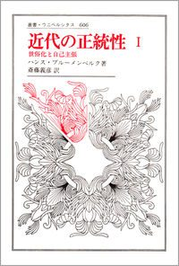
The Legitimacy of the Modern Age
Hans Blumenberg first published 1966
近代の正統性〈1〉世俗化と自己主張 ハンス・ブルーメンベルク（斎藤義彦 訳）
Editors' pick
Modernity is not secularised religion but an age of human self-assertion — understanding the turn from an age of religion to an age of knowledge.
Deschooling Society
Ivan Illich first published 1971
脱学校の社会 イヴァン・イリイチ
Recommended by Kan Suzuki
Schools monopolise learning; Illich imagines webs of self-directed learning. A source for moving 'from education to learning' and for community schools.
Orientalism
Edward W. Said first published 1978
オリエンタリズム（上） エドワード・W・サイード
Critiques how the West depicted the East as a backward Other — relativising Western modernity as the standard and layering in non-Western knowledge.
The Postmodern Condition
Jean-François Lyotard first published 1979
ポスト・モダンの条件 ジャン＝フランソワ・リオタール
Recommended by Kan SuzukiCited by Kan Suzuki
The classic that named the loss of faith in grand narratives. Graduating from modernity accepts this diagnosis but asks what to layer and build after deconstruction.
A Thousand Plateaus
Gilles Deleuze and Félix Guattari first published 1980
千のプラトー ジル・ドゥルーズ、フェリックス・ガタリ
Editors' pick
Thought as a rhizome without centre or hierarchy. Deepens multiplicity, autonomous decentralisation and flow — the post-modern way of thinking — in philosophical terms.
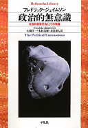
The Political Unconscious
Fredric Jameson first published 1981
政治的無意識 フレドリック・ジェイムソン
Narratives unconsciously reflect society's contradictions and history — a critique of postmodern culture that shows how culture shapes values.
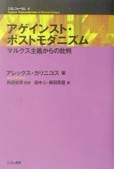
Against Postmodernism
Alex Callinicos first published 1989
アゲインスト・ポストモダニズム アレックス・カリニコス
A Marxist critique of postmodernism. Seeing the limits of thought that dismantles modernity without offering a vision clarifies the stance of 'graduating' rather than rejecting.
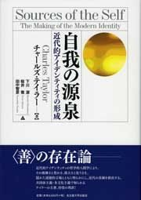
Sources of the Self
Charles Taylor first published 1989
自我の源泉 チャールズ・テイラー
Cited by Kan Suzuki
Traces the moral traditions behind the modern self. It grounds debates on recognition and multiculturalism and inherits modern values without rejecting them.
Contingency, Irony, and Solidarity
Richard Rorty first published 1989
偶然性・アイロニー・連帯 リチャード・ローティ
Gives up foundations of truth yet builds solidarity through sympathy for others' pain. Changing society by retelling stories rather than refuting is close to 'non-negation'.
The Consequences of Modernity
Anthony Giddens first published 1990
近代とはいかなる時代か？ アンソニー・ギデンズ
Modernity has not ended but is radicalised through self-reflection. A foil for comparing solutions from within modernity with the approach of layering a new stratum on top.
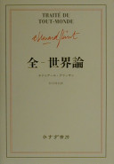
Treatise on the Whole-World
Édouard Glissant first published 1997
全－世界論 エドゥアール・グリッサン
Editors' pick
Creolisation and a world of relations where cultures mix unpredictably — seeing the world through relation rather than a single centre, from outside the West.
World Risk Society
Ulrich Beck first published 1999
世界リスク社会論 ウルリヒ・ベック
From distributing wealth to distributing risk: cross-border hazards outgrow modern institutions. Social theory behind reading 9/11 and Fukushima as turning points.
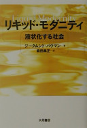
Liquid Modernity
Zygmunt Bauman first published 2000
リキッド・モダニティ ジグムント・バウマン
Solid modernity has melted; work and bonds have become fluid. Describes the condition under which we must ask how to tie people together again.
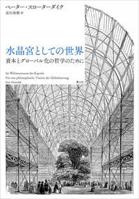
In the World Interior of Capital
Peter Sloterdijk first published 2005
水晶宮としての世界 ペーター・スローターダイク
Globalisation as a civilisation that has lost its outside and shut itself in a vast interior: the suffocation of modernity perfected, and why open 'verandas' are needed.
Social Acceleration
Hartmut Rosa first published 2005
加速する社会 ハルトムート・ローザ
Modernity as relentless acceleration. Rosa's call to recover 'resonance' with the world leads straight to the idea of co-creating through resonance.
Lines: A Brief History
Tim Ingold first published 2007
ラインズ 線の文化史 ティム・インゴルド
Editors' pick
Reading walking, writing and weaving through lines — life as flow and movement rather than straight modern lines between points.
The Transparency Society
Byung-Chul Han first published 2012
透明社会 ビョンチョル・ハン
Editors' pick
A society that makes everything visible does not free people but drives them to exploit themselves — a case for moving value back to irreplaceable beings and relationships.
The Dark Enlightenment
Nick Land first published 2012
暗黒の啓蒙 ニック・ランド
Neo-reactionary call to abandon democracy for accelerating technology and capital — a contrasting 'after modernity', diametrically opposed to deliberation and non-violence.
The Zero Marginal Cost Society
Jeremy Rifkin first published 2014
限界費用ゼロ社会 ジェレミー・リフキン
As marginal costs approach zero, capitalism gives way to the collaborative commons — material for thinking about post-modern economics and social DAOs.
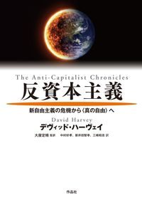
Seventeen Contradictions and the End of Capitalism
David Harvey first published 2014
反資本主義 デヴィッド・ハーヴェイ
Argues capitalism must be refused rather than reformed. Read as a representative 'de-modern' stance to see how graduation differs from rejection.
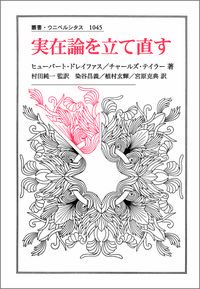
Retrieving Realism
Charles Taylor and Hubert Dreyfus first published 2015
実在論を立て直す チャールズ・テイラー、ヒューバート・ドレイファス
Challenges the modern split between mind and world and rebuilds an engaged realism — subject-object unity in contemporary philosophical terms.
Platform Capitalism
Nick Srnicek first published 2016
プラットフォーム資本主義 ニック・スルネック
Platform firms reshaped capitalism by monopolising data. Helps judge whether digital technology advances graduation from modernity or deepens modern concentration and monopoly.
All under Heaven Today
Zhao Tingyang first published 2016
天下の今日性――世界秩序の実践と想像 趙汀陽 (原著), 石井剛 (監修, 翻訳), 円光門 (翻訳)
Revives the ancient Chinese idea of 'tianxia' as a world order beyond the Westphalian nation-state — thinking past the modern state from a non-Western tradition.
The Society of Singularities
Andreas Reckwitz first published 2017
独自性の社会 アンドレアス・レックヴィッツ
In late modernity even the demand to be unique is bought and sold. A contrasting book that warns how the value of the irreplaceable can be commodified and emptied.
Philosophy of the Anthropocene (Hitoshinsei no Tetsugaku)
Masatake Shinohara first published 2018
人新世の哲学 篠原雅武
Rethinks humanity and nature when human activity is written into geology — the shift from material civilisation to a civilisation of life, asked from the ground up.
In the Ruins of Neoliberalism
Wendy Brown first published 2019
新自由主義の廃墟で ウェンディ・ブラウン
Shows how neoliberalism hollowed out democracy from within — a way to measure how far market logic has eroded politics, the crisis of democracy from which the Declaration starts.
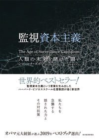
The Age of Surveillance Capitalism
Shoshana Zuboff first published 2019
監視資本主義 ショシャナ・ズボフ
An indictment of capitalism that mines human behaviour as raw material. Technology does not deliver a post-modern good by itself; we must ask whom it serves.
One Planet, Many Worlds
Dipesh Chakrabarty first published 2021
一つの惑星、多数の世界 ディペシュ・チャクラバルティ
Editors' pick
Rethinks the Anthropocene by joining human and planetary history from the formerly colonised side — widening the frame for leaving material civilisation behind.
Post-Europe
Yuk Hui first published 2024
ポストヨーロッパ ユク・ホイ
Western modernity is not the only form of technology; Hui proposes 'cosmotechnics' tied to local cosmologies — a lens for re-reading modernity from East Asia.
Science In-Between 52 books
Physics, life, information and complexity: sciences that changed how we see the world at the boundaries between fields.
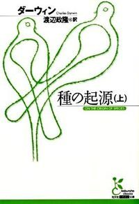
On the Origin of Species
Charles Darwin first published 1859
種の起源 チャールズ・ダーウィン
Life changes over long time through variation and selection — the summit of modern science that freed us from design, and a starting point for seeing life as connection and change.
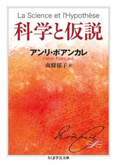
Science and Hypothesis
Henri Poincaré first published 1902
科学と仮説 ポアンカレ
Editors' pick
Scientific laws contain human conventions. Shakes the view of science as absolute truth; as a pioneer of chaos, he prepared complex-systems thinking.
Torahiko Terada: Scientists and Minds
Torahiko Terada first published 1933
寺田寅彦 科学者とあたま 寺田寅彦
Editors' pick
Essays drawing science from everyday wonders like sparklers and sugar candy — a heart for wonder over cleverness, the spirit of learning through play.
Origins of Computer Theory Vol. 1: Turing
Alan Turing (ed. Kazuyuki Ito, tr. Katsuhiko Sano) first published 1936
コンピュータ理論の起源 第1巻 チューリング 伊藤 和行 (編集), 佐野 勝彦 (翻訳, 解説)
Turing's papers defining computation — the summit of modernity that turned reason into a machine, and its limits.
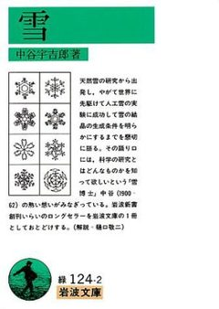
Snow
Ukichiro Nakaya first published 1938
雪 中谷宇吉郎
From observing snow crystals to making artificial snow — reading nature like a letter rather than mastering it, a science connected to nature.
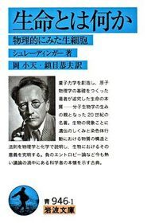
What Is Life?
Erwin Schrödinger first published 1944
生命とは何か エルヴィン・シュレーディンガー
A physicist on life through negative entropy and genetic information — bridging physics and life, a source for thinking biologically.
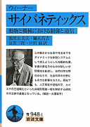
Cybernetics
Norbert Wiener first published 1948
サイバネティックス ノーバート・ウィーナー
Editors' pick
Founded the science of feedback and control shared by animals and machines — the source of autonomous, decentralised, cooperative control.
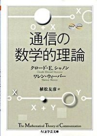
The Mathematical Theory of Communication
Claude E. Shannon first published 1949
通信の数学的理論 シャノン
Defined information mathematically — the scientific starting point for value shifting from matter and energy to communication.
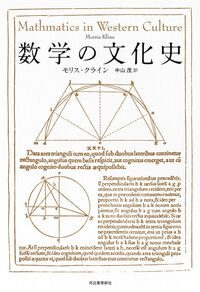
Mathematics in Western Culture
Morris Kline first published 1953
数学の文化史 モリス・クライン
How mathematics has interwoven with culture, art and thought — knowledge as part of human culture rather than isolated logic.
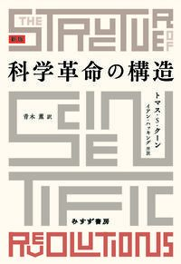
The Structure of Scientific Revolutions
Thomas S. Kuhn first published 1962
科学革命の構造 トーマス・クーン
Editors' pick
Science advances through paradigm shifts, not accumulation — the structure of 'graduation', moving to a new view built on the old.
Understanding Media
Marshall McLuhan first published 1964
メディア論 マーシャル・マクルーハン
Media extend the human body; form changes society more than content. The shift from print to electricity as a force for graduating from modernity.
The Sense of Wonder
Rachel Carson first published 1965
センス・オブ・ワンダー レイチェル・カーソン
The sensibility to marvel at nature, drawn from time with a child — a starting point for learning through play and for connection with nature.
Great Books of the World 66: Modern Science II
Hideki Yukawa and Takeshi Inoue (eds.) first published 1970
世界の名著66 現代の科学II 湯川秀樹、井上健（編）
Recommended by Kan Suzuki
Classic papers that opened twentieth-century physics — seeing in the originals how relativity and quantum theory shook determinism.
Introduction to Modern Mathematics (Gendai Sugaku Nyumon)
Hiraku Toyama first published 1972
現代数学入門 (ちくま学芸文庫 ト 13-2 Math&Science) 遠山啓
Modern mathematics via sets and structures. The shift from quantity to relation and structure mirrors seeing the world through relationships.
The Limits to Growth
Donella H. Meadows et al. first published 1972
成長の限界 ドネラ・H・メドウズほか
Exponential growth in population and economy will hit planetary limits — the first numerical case for graduating from growth-first material civilisation.
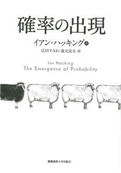
The Emergence of Probability
Ian Hacking first published 1975
確率の出現 イアン・ハッキング（広田すみれ・森元良太 訳）
Editors' pick
How the idea of probability arose in the seventeenth century — how modern knowledge came to handle chance and uncertainty with numbers.
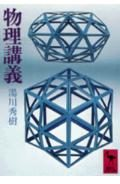
Lectures on Physics (Butsuri Kogi)
Hideki Yukawa first published 1975
物理講義 湯川秀樹
Recommended by Kan Suzuki
Japan's first Nobel laureate on how physics thinks; his affinity for Eastern thought models the layering of Eastern and Western knowledge.
Rethinking Life (Seimei o Toraenaosu)
Hiroshi Shimizu first published 1978
生命を捉えなおす 清水博
Recommended by Kan Suzuki
Life as a 'field' that creates order from relationships — a Japanese theory of life supporting relational thinking and subject-object unity.
Gödel, Escher, Bach
Douglas R. Hofstadter first published 1979
ゲーデル、エッシャー、バッハ ダグラス・R・ホフスタッター
Editors' pick
Gödel, Escher and Bach interwoven to explore self-reference, loops and mind — embodying the superposition of science and art.
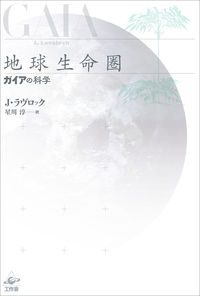
Gaia: A New Look at Life on Earth
James Lovelock first published 1979
地球生命圏 J・ラヴロック
Editors' pick
Earth as a self-regulating system of life and environment — the Gaia hypothesis behind this atlas's 'single flow'.
The Self-Organizing Universe
Erich Jantsch first published 1980
自己組織化する宇宙 エーリッヒ・ヤンツ
Recommended by Kan SuzukiCited by Kan Suzuki
From the cosmos to life, society and culture through self-organisation. Listed in the Declaration's references; nature and humanity as one flow at the largest scale.
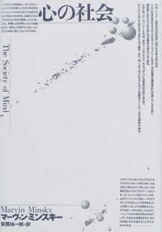
The Society of Mind
Marvin Minsky first published 1986
心の社会 マーヴィン・ミンスキー
Editors' pick
Mind as a society of many simple agents — a centreless, decentralised view of mind that connects to post-modern thinking and organisation.
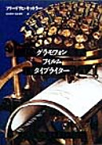
Gramophone, Film, Typewriter
Friedrich Kittler first published 1986
グラモフォン・フィルム・タイプライター フリードリヒ・キットラー
Three media transformed human senses and writing — essential for asking about humans inside information civilisation.
Chaos: Making a New Science
James Gleick first published 1987
カオス――新しい科学をつくる J.グリック
Cited by Kan Suzuki
The butterfly effect and the birth of chaos theory. Listed in the Declaration's references; scientific background for the conviction 'we are small, but not powerless'.
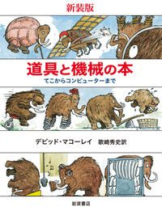
The Way Things Work
David Macaulay and Neil Ardley first published 1988
道具と機械の本 デビッド・マコーレイ、ニール・アードレー
Illustrated principles of tools and machines — to graduate from machine civilisation with gratitude, first learn how machines and human ingenuity work.
The Emperor's New Mind
Roger Penrose first published 1989
皇帝の新しい心 ロジャー・ペンローズ
Editors' pick
Mind cannot be explained by computation alone — material for questioning the modern view of mind as machine in the age of AI.
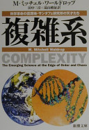
Complexity
M. Mitchell Waldrop first published 1992
複雑系 M・ミッチェル・ワールドロップ
Recommended by Kan SuzukiCited by Kan Suzuki
How researchers across fields launched the science of complexity at the Santa Fe Institute. Listed in the Declaration's references; central to moving from simple to complex systems.
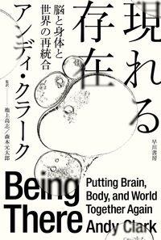
Being There
Andy Clark first published 1997
現れる存在 アンディ・クラーク
Editors' pick
Mind works across brain, body, tools and environment — cognitive-science support for moving beyond the subject-object split.
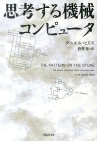
The Pattern on the Stone
W. Daniel Hillis first published 1998
思考する機械 コンピュータ ダニエル・ヒリス
How computers become thinking machines, from logic gates up — knowing the principles is the precondition for using digital technology well.
A Hundred Years of the Nobel Prize (Noberu-sho no 100-nen)
Rensei Baba first published 2002
ノーベル賞の100年 馬場錬成
Recommended by Kan Suzuki
Twentieth-century science through the Nobel Prize — a footing for seeing what modern science achieved and where it is now shaken.
The Elements of Computing Systems
Noam Nisan and Shimon Schocken first published 2005
コンピュータシステムの理論と実装 第2版 Noam Nisan、Shimon Schocken
Build a computer yourself, from logic gates to an operating system — refusing to treat technology as a black box and making it our own tool.
Quantum: Einstein, Bohr and the Great Debate
Manjit Kumar first published 2008
量子革命 マンジット・クマール
The making of quantum mechanics through the Einstein-Bohr debate — graduating from determinism as a story.
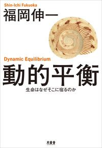
Dynamic Equilibrium (Doteki Heiko)
Shin-Ichi Fukuoka first published 2009
動的平衡 福岡伸一
Recommended by Kan Suzuki
Life keeps its form while constantly replacing itself. A symbol of seeing the world as flow rather than fixed parts.
What Technology Wants
Kevin Kelly first published 2010
テクニウム――テクノロジーはどこへ向かうのか？ ケヴィン・ケリー
Technology as an ecosystem that evolves like a living thing — beyond technology as a mere tool, a biological view of humans and technology.
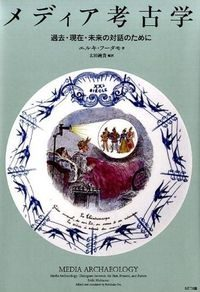
Media Archaeology (Japanese edition)
Erkki Huhtamo first published 2011
メディア考古学 エルキ・フータモ
Digging up lost and unrealised media to read media history as recurrence rather than linear progress — a method of re-layering modernity.
Doing Data Science
Rachel Schutt and Cathy O'Neil first published 2013
データサイエンス講義 Rachel Schutt、Cathy O’Neil
Practitioners teach how to think with data. Measurement is a modern strength — not to be discarded but redirected toward measuring well-being.
What Is Biohistory? (Seimeishi to wa Nanika)
Keiko Nakamura first published 2014
生命誌とは何か 中村桂子
The history of life told as 'biohistory', placing humans among living things — a scientific base for a civilisation seen through connections of life.
Superintelligence
Nick Bostrom first published 2014
スーパーインテリジェンス ニック・ボストロム
Editors' pick
Intelligence beyond humans could threaten our survival — a contrasting brake on the optimism that AI will accelerate a better future.
The Design and Implementation of the FreeBSD Operating System
Marshall Kirk McKusick, George V. Neville-Neil and Robert N. M. Watson first published 2014
BSDカーネルの設計と実装――FreeBSD詳解（改訂2版） マーシャル・カーク・マキュージック、ジョージ・V・ネヴィル＝ニール、ロバート・N・M・ワトソン
An open-source OS designed and passed down openly by a community — published in Japanese by ZEN University Press, an example of a knowledge commons.
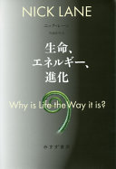
The Vital Question
Nick Lane first published 2015
生命、エネルギー、進化 ニック・レーン
The origin and evolution of life explained through flows of energy — current science for seeing life as flow rather than parts.
Brain, Mind and Artificial Intelligence (No, Kokoro, Jinko Chino)
Shun-ichi Amari first published 2016
脳・心・人工知能 甘利俊一
From the mathematics of the brain to AI — comparing them to ask what is uniquely human and to imagine living with AI.
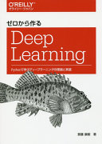
Deep Learning from Scratch (Zero kara Tsukuru Deep Learning)
Koki Saitoh first published 2016
ゼロから作るDeep Learning 斎藤康毅
Learn deep learning by writing the code yourself — understanding AI's principles rather than fearing it from outside.
Theory of Quantum Computation (Ryoshi Keisan Riron)
Tomoyuki Morimae first published 2017
量子計算理論――量子コンピュータの原理 森前智行
The principles of quantum computing based on superposition — how quantum-style thinking becomes real technology.
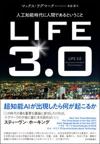
Life 3.0: Being Human in the Age of Artificial Intelligence
Max Tegmark first published 2017
ＬＩＦＥ ３．０―人工知能時代に人間であるということ マックス・テグマーク
Scenarios for how AI could change humanity's future — asking what it means to be human and how to layer technology and values together.
Designing Data-Intensive Applications
Martin Kleppmann (and Chris Riccomini) first published 2017
データ指向アプリケーションデザイン 第2版 マーティン・クレップマン／クリス・リコミニ
Designing systems that handle data reliably across many machines — distributed parts cooperating without a centre, a technical form of autonomous decentralised cooperation.
BioBuilder: Synthetic Biology in the Lab
Natalie Kuldell, Rachel Bernstein, Karen Ingram and Kathryn M. Hart first published 2018
バイオビルダー――合成生物学をはじめよう ナタリー・カルデル／レイチェル・バーンスタイン／カレン・イングラム／キャスリン・M・ハート
Synthetic biology even high-school students can try — bringing the 'synthetic biology' keyword in the atlas's sky within reach.
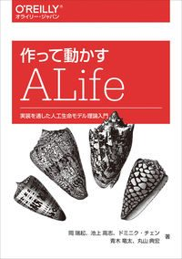
ALife by Making and Running (Tsukutte Ugokasu ALife)
Mizuki Oka, Takashi Ikegami, Dominique Chen, Ryuta Aoki and Norihiro Maruyama first published 2018
作って動かすALife――実装を通した人工生命モデル理論入門 岡瑞起／池上高志／ドミニク・チェン／青木竜太／丸山典宏
Editors' pick
Build and run artificial-life models to ask what life is — learning biological thinking by implementation, not only theory.
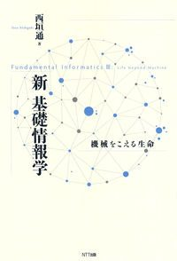
New Fundamental Informatics (Shin Kiso Johogaku)
Toru Nishigaki first published 2021
新 基礎情報学 西垣通
Editors' pick
Distinguishes information in life, society and machines through autopoiesis — information as a question of meaning, not just efficiency.
Active Inference
Thomas Parr, Giovanni Pezzulo and Karl J. Friston first published 2022
能動的推論 トーマス・パー、ジョヴァンニ・ペッツーロ、カール・フリストン
The free-energy principle: brains reduce error with the world through prediction and action — subject-object unity from current neuroscience.
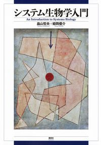
Introduction to Systems Biology (Shisutemu Seibutsugaku Nyumon)
Tetsuhiro Hatakeyama and Yusuke Himeoka first published 2023
システム生物学入門 畠山哲央・姫岡優介
Editors' pick
Life as interacting systems, not a heap of molecular parts — moving from reductionism to wholes and relations through current science.
Symbol Emergence Systems (Kigo Soshutsu Shisutemuron)
Tadahiro Taniguchi (ed.) first published 2024
記号創発システム論――来るべきAI共生社会の「意味」理解にむけて 谷口忠大（編）
How humans and AI create symbols and meaning together — turning 'AI accelerates the future' into a shift from sign consumption to symbol emergence.
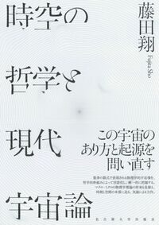
Philosophy of Space-Time and Modern Cosmology (Jiku no Tetsugaku to Gendai Uchuron)
Sho Fujita first published 2026
時空の哲学と現代宇宙論 藤田翔
What is space-time and how did the universe begin, from philosophy and cosmology — an entry to a world picture beyond absolute space and time.
Philosophy as Origin 19 books
Classics that established — and then questioned — modern reason and the modern subject.
The Analects
Confucius first published c. 450 BCE
論語 孔子
Sayings of Confucius and his disciples. One of the layers in Japan's superposition; an ethics of relationships that predates modernity.
Tao Te Ching
Laozi first published c. 300 BCE
老子 老子
The soft and weak overcome the hard and strong — 'softness controls hardness', a principle of non-action and harmony against modern competition and force.
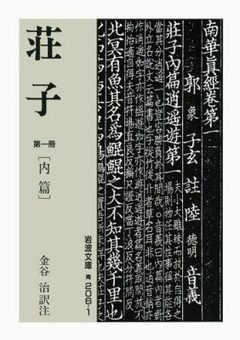
Zhuangzi
Zhuangzi first published c. 300 BCE
荘子 荘子（荘周）
Parables of the usefulness of the useless and the equality of all things — a treasure of ideas for freeing ourselves from measuring by efficiency.
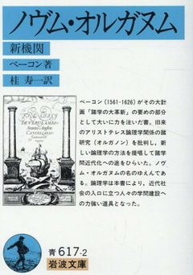
Novum Organum
Francis Bacon first published 1620
ノヴム・オルガヌム フランシス・ベーコン
Cited by Kan Suzuki
The method of observation and experiment behind 'knowledge is power'. Knowing where knowledge as mastery of nature began is the first step toward graduating from it.
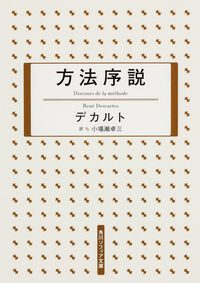
Discourse on the Method
René Descartes first published 1637
方法序説 デカルト
Cited by Kan Suzuki
'I think, therefore I am' — the starting point of modern philosophy and its rational method. The source of the mechanism and mind-body dualism we graduate from with gratitude.
Principia: Mathematical Principles of Natural Philosophy
Isaac Newton first published 1687
プリンシピア 自然哲学の数学的原理 I.ニュートン
Cited by Kan Suzuki
Three laws of motion and universal gravitation explain heaven and earth with one mathematics. Listed in the Declaration's references; the source of the deterministic worldview.
On the Study Methods of Our Time
Giambattista Vico first published 1709
学問の方法 ヴィーコ
A contemporary challenge to Descartes defending history, rhetoric and common sense — evidence that non-rationalist knowledge existed at modernity's dawn.
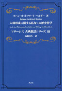
This Too a Philosophy of History for the Formation of Humanity
Johann Gottfried Herder first published 1774
人間形成に関する私なりの歴史哲学 J.G.ヘルダー
Cited by Kan Suzuki
Against Enlightenment progress, each age and people has its own value. Listed in the Declaration's references; layering cultural diversity beyond linear progress.
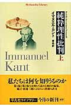
Critique of Pure Reason
Immanuel Kant first published 1781
純粋理性批判（上） カント
Cited by Kan Suzuki
The summit of modern philosophy, mapping the frame and limits of human knowledge. Learning reason's power and limits fully is the precondition for leaving rationalism.
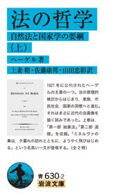
Elements of the Philosophy of Right
G. W. F. Hegel first published 1820
法の哲学（上） ヘーゲル
Cited by Kan Suzuki
Systematises modern freedom through family, civil society and state — the basis for layering deliberation and self-government onto the modern state.
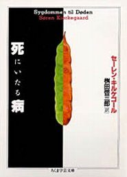
The Sickness unto Death
Søren Kierkegaard first published 1849
死に至る病 S.キルケゴール
Cited by Kan Suzuki
Despair as losing oneself; living as a single individual. Listed in the Declaration's references; the start of philosophy 'graduating' from rationalism.
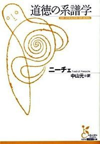
On the Genealogy of Morality
Friedrich Nietzsche first published 1887
道徳の系譜 フリードリヒ・ニーチェ
Values of good and evil were made by history and power. A source for creating one's own values rather than being bound by given ones.
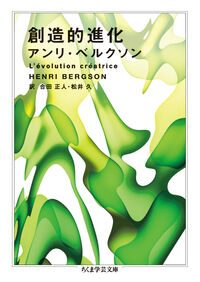
Creative Evolution
Henri Bergson first published 1907
創造的進化 アンリ・ベルクソン
Life as a creative current that constantly produces the new, not mechanical causation — philosophical background for thinking biologically and for a civilisation of life.
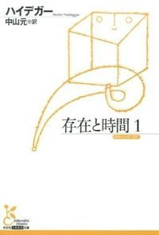
Being and Time
Martin Heidegger first published 1927
存在と時間（1） ハイデガー
Cited by Kan Suzuki
Human beings as mortal and irreplaceable. Listed in the Declaration's references; supports locating value in existence itself rather than function or ability.
The Meaning of Modernity (Benjamin Collection 1)
Walter Benjamin first published 1935
ベンヤミン・コレクション1 近代の意味 ヴァルター・ベンヤミン
Editors' pick
Mechanical reproduction strips art of its unique aura — a source for an aesthetics of the once-in-a-lifetime, embodiment and the irreplaceable.
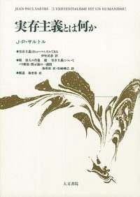
Existentialism Is a Humanism
Jean-Paul Sartre first published 1946
実存主義とは何か ジャン＝ポール・サルトル
Existence precedes essence: we are made by our choices. Links to a view of humanity that places will and aspiration at the source of value.
Philosophical Investigations
Ludwig Wittgenstein first published 1953
哲学探究 ルートウィッヒ・ウィトゲンシュタイン
Meaning lies in use, not definition. Seeing loose family resemblances rather than drawing hard lines is close to the idea of superposition.
Totality and Infinity
Emmanuel Levinas first published 1961
全体性と無限 エマニュエル・レヴィナス
The Other is infinite, and ethics begins in answering the face. Deepens a view of relationships as responses to irreplaceable beings, not interchangeable functions.
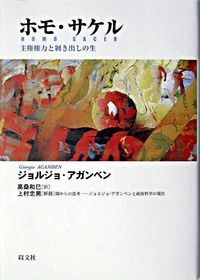
Homo Sacer
Giorgio Agamben first published 1995
ホモ・サケル ジョルジョ・アガンベン
How sovereign power strips life bare to manage it. Exposes the dark side of the modern state and the need for a politics centred on life.
Social Thought in Motion 31 books
Thought on the state, markets, democracy and the public: how society works.
The Muqaddimah
Ibn Khaldun first published 1377
歴史序説 イブン・ハルドゥーン
Editors' pick
Group solidarity (asabiyya) raises and ruins dynasties in a cycle of nomad and city — a non-Western theory of civilisational cycles that relativises linear progress.
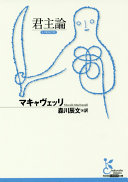
The Prince
Niccolò Machiavelli first published 1532
君主論 ニッコロ・マキャヴェッリ
Realist power politics where ends justify means — the origin of modern political science, prompting a turn to politics of deliberation and trust.
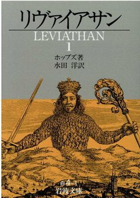
Leviathan
Thomas Hobbes first published 1651
リヴァイアサン トマス・ホッブズ
To end the war of all against all, people contract to hand power to a mighty state — the origin of social-contract theory and of the modern state's logic.
Two Treatises of Government
John Locke first published 1689
『統治二論』 ジョン・ロック
Property arises from labour and government rests on consent — the root of private property, and a starting point for commons and social DAOs.
The Social Contract
Jean-Jacques Rousseau first published 1762
社会契約論 ジャン＝ジャック・ルソー
Popular sovereignty: the people govern themselves through the general will — a basis for deliberative politics beyond representation.
An Introduction to the Principles of Morals and Legislation
Jeremy Bentham first published 1789
道徳および立法の諸原理序説 J.ベンサム
Cited by Kan Suzuki
The greatest happiness of the greatest number — the source of utilitarianism, read to fully understand the modern ethics of summing utility.
The Communist Manifesto
Karl Marx and Friedrich Engels first published 1848
共産党宣言 マルクス、エンゲルス
Recommended by Kan SuzukiCited by Kan Suzuki
A call to overthrow capitalism by revolution. Listed in the Declaration's references; the origin of negating modernity through struggle, unlike non-violent graduation.
On Liberty
John Stuart Mill first published 1859
自由論 J・S・ミル
Cited by Kan Suzuki
Freedom should be protected unless it harms others; beware the tyranny of the majority — a liberal premise for protecting diversity.
Community and Society (Gemeinschaft und Gesellschaft)
Ferdinand Tönnies first published 1887
ゲマインシャフトとゲゼルシャフト（上） フェルディナント・テンニース
The classic contrast of community bound by feeling and society bound by interest — a lens for re-weaving, in new forms, bonds lost to modernisation.
The Rules of Sociological Method
Émile Durkheim first published 1895
社会学的方法の規準 エミール・デュルケーム
Editors' pick
Treat social facts as things: the method of modern sociology. Read to know the strengths and limits of 'objective measurement' in the social sciences.
Selected Writings of Liang Qichao
Liang Qichao (ed. and tr. Takashi Okamoto et al.) first published 1902
梁啓超文集 岡本 隆司 (編集, 翻訳), 石川 禎浩 (編集, 翻訳), 高嶋 航 (編集, 翻訳)
How a late-Qing thinker confronted Western modernity to transform his country — relativising Japan's own layering by seeing how East Asia received modernity.
Mutual Aid
Peter Kropotkin first published 1902
〈新装〉増補修訂版 相互扶助論 ピョートル クロポトキン (著), 大杉 栄 (翻訳)
What sustains nature and society is mutual aid, not competition — biological and historical support for moving from competition to mutual help and support.
The Protestant Ethic and the Spirit of Capitalism
Max Weber first published 1905
プロテスタンティズムの倫理と資本主義の精神 マックス・ウェーバー
Editors' pick
Ascetic Protestant ethics produced the spirit of capitalism — where the modern spirit we graduate from came from.
Luxury and Capitalism (Liebe, Luxus und Kapitalismus)
Werner Sombart first published 1912
恋愛と贅沢と資本主義 ヴェルナー・ゾンバルト
Love and luxury consumption nurtured capitalism — a counterpart to Weber, on how a civilisation of desire and consumption arose.
Public Opinion
Walter Lippmann first published 1922
世論（上） ウォルター・リップマン
Recommended by Kan SuzukiCited by Kan Suzuki
We act on pictures in our heads, not reality. Listed in the Declaration's references; the limits of mass media and representative democracy.
The Revolt of the Masses
José Ortega y Gasset first published 1930
大衆の反逆 オルテガ・イ・ガセット
Recommended by Kan Suzuki
The classic on the rise of the unthinking mass. Origin of the 'fraying of mass systems' and of the need to turn to deliberating citizens.
The Concept of the Political
Carl Schmitt first published 1932
政治的なものの概念 カール・シュミット
Politics as the friend-enemy distinction — the theoretical model of 'totally negating the enemy', sharply contrasted with non-negation.
Escape from Freedom
Erich Fromm first published 1941
自由からの逃走 エーリッヒ・フロム
Editors' pick
Modern freedom left people lonely and anxious and drove them to submit to authority — a prompt to rethink freedom within relationships.
Social Choice and Individual Values
Kenneth J. Arrow first published 1951
社会的選択と個人的評価 K.J.アロー
Cited by Kan Suzuki
The impossibility theorem: no method fairly aggregates individual preferences. Listed in the Declaration's references; the limits of voting and a reason to turn to deliberation.
The Human Condition
Hannah Arendt first published 1958
人間の条件 ハンナ・アレント
Recommended by Kan SuzukiCited by Kan Suzuki
Labour, work and action — the meaning of people relating through words and deeds. The book cited most in the Declaration; plurality and the public.
The Wretched of the Earth
Frantz Fanon first published 1961
地に呪われたる者 フランツ・ファノン
The violence colonialism inscribed on minds and bodies, and a call for liberation — the dark side of Western modernity from the side of the ruled.
The Society of the Spectacle
Guy Debord first published 1967
スペクタクルの社会 ギー・ドゥボール
Editors' pick
A critique of life replaced by images and commodities — a pioneering analysis of sign consumption and a starting point for valuing embodiment and once-in-a-lifetime encounters.
The Interpretation of Cultures
Clifford Geertz first published 1973
文化の解釈学 I クリフォード・ギアツ
Culture as webs of meaning and the method of 'thick description' — seeing people through meaning and relationship rather than numbers.
Discipline and Punish
Michel Foucault first published 1975
監獄の誕生 ミシェル・フーコー
Recommended by Kan SuzukiCited by Kan Suzuki
Prisons, schools and factories gave birth to power that watches and disciplines. Listed in the Declaration's references; why to move from control to autonomy.
Constitutional Theory of Civic Self-Government (Shimin Jichi no Kenpo Riron)
Keiichi Matsushita first published 1975
市民自治の憲法理論 松下 圭一
Re-reading the constitution from citizens' self-government rather than the state — a Japanese forerunner of deliberation and rural self-governing municipalities.
The Sound of the Air Current (Kiryu no Naru Oto)
Munesuke Mita first published 1977
気流の鳴る音 見田宗介
Through the world of Don Juan, a Japanese sociologist explores ways of living beyond the modern self — a feel for subject-object unity and a civilisation of life.
Distinction: A Social Critique of the Judgement of Taste
Pierre Bourdieu first published 1979
ディスタンクシオン――社会的判断力批判（Ⅰ・Ⅱ） ピエール・ブルデュー
Editors' pick
Taste divides people by cultural capital and reproduces class — the irreplaceable and 'sense' can become tools of inequality, a question for post-modern values.
After Virtue
Alasdair MacIntyre first published 1981
美徳なき時代 A.マッキンタイア
Cited by Kan Suzuki
Modern moral philosophy lost the tradition of virtue; recover virtue within practices, narratives and traditions — a pillar of the turn to communitarian ethics.
Endogenous Development (Naihatsuteki Hattenron no Tenkai)
Kazuko Tsurumi first published 1996
内発的発展論の展開 鶴見和子
Editors' pick
Development chosen by local people from their own traditions and nature, not imitation of the West — a forerunner of intrinsic motivation at the scale of a region.
Reassembling the Social
Bruno Latour first published 2005
社会的なものを組み直す ラトゥール
Editors' pick
Actor-network theory redraws society as networks of people and things. A leading 'amodern' position to compare with graduating from modernity.
Beyond Nature and Culture
Philippe Descola first published 2005
自然と文化を越えて フィリップ・デスコラ
Editors' pick
The Western split between nature and culture is only one of the world's ontologies — anthropological support for not separating humans from nature.
History of Transformation 11 books
The rise and fall of civilisations and how the modern world was made.
War and Civilization
Arnold J. Toynbee first published 1950
戦争と文明 アーノルド・J・トインビー
Civilisations' rise and fall in relation to war — background for moving toward a civilisation of beauty and compassion.
Open Veins of Latin America
Eduardo Galeano first published 1971
収奪された大地――ラテンアメリカ五百年（新装新版） エドゥアルド・ガレアーノ（大久保光夫 訳）
Five centuries of plunder of Latin America's resources and wealth — the extraction behind modern prosperity, from the side of the plundered.
When Civilisations Decline (Bunmei ga Suibo Suru Toki)
Masataka Kosaka first published 1981
文明が衰亡するとき 高坂正堯
Editors' pick
What happens as civilisations like Rome or Britain decline — how to face the end of modern prosperity, by a scholar close to Masayoshi Ohira's policy studies.
The Rise and Fall of the Great Powers
Paul Kennedy first published 1987
大国の興亡（上） ポール・ケネディ
Recommended by Kan Suzuki
Great powers rise and fall on the balance of economic and military strength — how hegemonic modern states bring on their own limits.
Clubs and Salons (Kurabu to Saron)
Akio Kobayashi et al. first published 1991
クラブとサロン 小林章夫ほか
Recommended by Kan Suzuki
How coffee houses, clubs and salons gave birth to public opinion and knowledge — hints for building public spheres and a 'government of arts and learning'.
A World History of Things (Mono no Sekaishi)
Masakatsu Miyazaki first published 1996
モノの世界史 宮崎正勝
Recommended by Kan Suzuki
World history through the movement of everyday things like sugar and spices — what material trade gave modernity, and what to inherit before graduating.
The Clash of Civilizations
Samuel P. Huntington first published 1996
文明の衝突（上） サミュエル・ハンチントン
The post-Cold War world as clashing civilisations. A contrasting book for 9/11 that highlights the alternative of superposition and coexistence.
World-Systems Analysis
Immanuel Wallerstein first published 2004
世界システム分析 イマニュエル・ウォーラーステイン
Editors' pick
The modern world as one economy of core and periphery — a view from the periphery that refuses to treat Western modernity as the only path.
The Birth of the Modern World, 1780–1914
C. A. Bayly first published 2004
近代世界の誕生 C. A. ベイリ
A global history in which the whole world, not just the West, changed together — a plural view of modernity, matching the idea that graduation emerges everywhere at once.
Revolution 1989: The Fall of the Soviet Empire
Victor Sebestyen first published 2009
東欧革命1989 ソ連帝国の崩壊 ヴィクター・セベスチェン
Recommended by Kan Suzuki
The year Eastern European regimes fell. Havel's Velvet Revolution, a non-violent change, inspired the term 'graduating from modernity'.
Against the Grain
James C. Scott first published 2017
反穀物の人類史 ジェームズ・C・スコット
Were grain and the state really progress? Rethinks the origins of farming and rule and other possible ways of life outside the state-centred modern order.
The Five Articles — Thinking 31 books
From simple systems and reductionism to thinking in terms of complexity, quantum theory and life.
An Inquiry into the Good
Kitaro Nishida first published 1911
善の研究 西田幾多郎
Cited by Kan Suzuki
Japan's first original philosophy, starting from 'pure experience' before subject and object divide — the core of subject-object unity.
Course in General Linguistics
Ferdinand de Saussure first published 1916
一般言語学講義 ソシュール
Language as a system of differences — the origin of signifier and signified, the vocabulary behind analyses of sign consumption.
Introductory Lectures on Psycho-Analysis
Sigmund Freud first published 1917
精神分析入門（上） フロイト
Recommended by Kan SuzukiCited by Kan Suzuki
Unconscious forces drive the mind. Listed in the Declaration's references as the shaking of the modern image of the rational subject.
Collected Papers on Semiotics
Charles Sanders Peirce first published 1931
記号学 2 チャールズ・サンダース・パース
Editors' pick
Signs that call forth signs, meaning generated without end. A basis for moving from sign consumption to the shared creation of meaning.
On Formally Undecidable Propositions (Incompleteness Theorems)
Kurt Gödel first published 1931
不完全性定理 ゲーデル
Recommended by Kan Suzuki
Every system contains truths it cannot prove — symbol of the doubts about the foundations of mathematics and of graduating from the omnipotence of reason and logic.
The Origin Exists (Genten ga Sonzai Suru)
Gan Tanigawa first published 1958
原点が存在する 谷川雁
A poet who organised cultural circles with Kyushu miners — people gathering to make culture in their own words, a Japanese origin of social production.
The Savage Mind
Claude Lévi-Strauss first published 1962
野生の思考 クロード・レヴィ＝ストロース
Editors' pick
So-called primitive thought has precise classification and logic. The plurality of knowledge underlies relativising modern knowledge.
The Tacit Dimension
Michael Polanyi first published 1966
暗黙知の次元 マイケル・ポランニー
Editors' pick
We know more than we can tell. Tacit knowledge supports valuing practice and knowledge that cannot simply be transferred.
Theory of Communal Illusion (Kyodo Gensoron)
Takaaki Yoshimoto first published 1968
共同幻想論 吉本隆明
The state arises from shared illusions, read through folk tales and classics — questioning the self-evident state and the stories that bind people.
Steps to an Ecology of Mind
Gregory Bateson first published 1972
精神の生態学へ（上） グレゴリー・ベイトソン
Editors' pick
Mind lies in patterns of relationship, not inside a single head — a source of relational thinking and of valuing being and relationship.
The Phenomenology of Intersubjectivity
Edmund Husserl first published 1973
間主観性の現象学 その方法 エトムント・フッサール
How a shared world is constituted between subjects — the heart of the phenomenology repeatedly referred to, and a basic concept for seeing the world through relations.
Method 1: The Nature of Nature
Edgar Morin first published 1977
方法1 自然の自然 エドガール・モラン
Recommended by Kan Suzuki
Against modern science's simplification and reduction, a method for thinking complexity as complex — complex systems, a pillar of post-modern thinking.
A Pattern Language
Christopher Alexander et al. first published 1977
パタン・ランゲージ クリストファー・アレグザンダーほか
Editors' pick
253 patterns for towns and buildings as a language shared by residents — participatory making rather than top-down design, an idea of self-government.
Autopoiesis and Cognition
Humberto R. Maturana and Francisco J. Varela first published 1980
オートポイエーシス H・R・マトゥラーナ、F・J・ヴァレラ
Editors' pick
Life defined as a system that continually produces itself — a central concept of science 'graduating' and of thinking biologically.
Weak Thought
Gianni Vattimo and Pier Aldo Rovatti (eds.) first published 1983
弱い思考 ジャンニ・ヴァッティモ、ピエル・アルド・ロヴァッティ（編）
Stepping down from strong thought that seeks firm foundations to a weak, open thinking — close to 'non-negation': loosening rather than overthrowing modernity.
Into the Universe of Technical Images
Vilém Flusser first published 1985
テクノコードの誕生 ヴィレム・フルッサー
Editors' pick
Technical images change how humans grasp the world — clues for creating meaning together in a society flooded with signs and images.
Information Anxiety (Japanese ed.: The Secret of Understanding)
Richard Saul Wurman first published 1989
理解の秘密――マジカル・インストラクション リチャード・S・ワーマン
Why explanations fail and how to make them understood, from a pioneer of information design — designing for mutual understanding in a civilisation centred on communication.
The Art of Editing Knowledge (Chi no Henshujutsu)
Seigow Matsuoka first published 2000
知の編集術 松岡正剛
Recommended by Kan Suzuki
The method of 'editing' — gathering, combining and creating new meaning. The heart of layering, combining and competing.
Hardwired Behavior: What Neuroscience Reveals about Morality
Laurence Tancredi first published 2005
道徳脳とは何か――ニューロサイエンスと刑事責任能力 L.タンクレディ
Cited by Kan Suzuki
How neuroscience reshapes moral judgement and criminal responsibility. Listed in the Declaration's references; free will and rational judgement shaken by brain science.
The Laws of Simplicity
John Maeda first published 2006
シンプリシティの法則 ジョン・マエダ
Ten laws — reduce, organise, learn — for making things simple: from ever-added features to simplicity that serves people.
Thinking in Systems
Donella H. Meadows first published 2008
世界はシステムで動く――いま起きていることの本質をつかむ考え方 ドネラ・H・メドウズ
See problems as systems of connections and feedback — the thinking behind core-issue mapping, bringing complexity to everyday challenges.
The Quadruple Object
Graham Harman first published 2011
四方対象 グレアム・ハーマン
Object-oriented ontology: all things exist in their own right, beyond human-centred views — another angle on overcoming the subject-object split.
Nishida Kitaro's Philosophy of Life (Nishida Kitaro no Seimei Tetsugaku)
Tatsuya Higaki first published 2011
西田幾多郎の生命哲学 檜垣立哉
Recommended by Kan Suzuki
Re-reads Nishida as a philosophy of life, body and action — linking pure experience to contemporary philosophy of life and subject-object unity.
Systems Thinking for Social Change
David Peter Stroh first published 2015
社会変革のためのシステム思考実践ガイド――共に解決策を見出し、コレクティブ・インパクトを創造する デイヴィッド・ピーター・ストロー
Stakeholders share the structure of a problem through systems thinking and create solutions together — a guide to community solutions and collective impact.
Whiplash: How to Survive Our Faster Future
Joi Ito and Jeff Howe first published 2016
9プリンシプルズ――加速する未来で勝ち残るために 伊藤穰一／ジェフ・ハウ
Nine principles for a fast-changing age — resilience over strength, emergence over authority, compass over maps — from central planning to emergence.
Philosophy of the Tourist (Kankokyaku no Tetsugaku)
Hiroki Azuma first published 2017
観光客の哲学 東浩紀
Solidarity born from chance encounters, as a tourist drifts from purpose. Resonates with forming relationships through loose ties rather than rigid belonging.
On the Shoulders of Giants
Umberto Eco first published 2017
ウンベルト・エーコの世界文明講義 ウンベルト・エーコ
Editors' pick
Reading cultures and civilisations through signs and language — help for moving from a civilisation of consuming signs to one of making meaning together.
Humankind: Solidarity with Non-Human People
Timothy Morton first published 2017
ヒューマンカインド――人間ならざるものとの連帯 ティモシー・モートン
Solidarity between humans and other beings — connecting with nature without splitting subject and object, from speculative realism.
Designing a Shrinking Society (Jinko Gensho Shakai no Dezain)
Yoshinori Hiroi first published 2019
人口減少社会のデザイン 広井 良典 (著)
A steady-state, decentralised path for depopulating Japan without assuming growth — policy support for rural municipalities and well-being commons.
Power and Modes of Exchange
Kojin Karatani first published 2022
力と交換様式 柄谷行人
Society through modes of exchange — reciprocity, plunder and redistribution, commodity exchange — and mode D, reciprocity restored at a higher level.
Augmented Ecosystems (Kakucho Seitaikei)
Masatoshi Funabashi first published 2025
拡張生態系――生命から照らす人類・地球・科学の未来 舩橋真俊
From synecoculture, planting many species to augment ecosystems, a vision of humanity and Earth — humans enriching ecosystems, a civilisation of life and farming.
The Five Articles — Values 36 books
From function and ability to being and relationship: the irreplaceable, the once-in-a-lifetime, intrinsic motivation.
History of Japanese Art (Nihon Bijutsushi)
Kakuzo Okakura (Tenshin) first published 1922
日本美術史 岡倉天心
Meiji lectures that first systematised Japanese art as its own history — learning from the West while layering Eastern beauty, a model of East-West superposition.
Homo Ludens
Johan Huizinga first published 1938
ホモ・ルーデンス ヨハン・ホイジンガ
Culture arises from play. The ground for a revolution through play and learning, and for changing society through play.
The Story of Art
E. H. Gombrich first published 1950
美術の物語 E・H・ゴンブリッチ
Editors' pick
Art from prehistory to the present in one volume — what humanity has found beautiful, a premise for art moving civilisation.
Today's Art (Konnichi no Geijutsu)
Taro Okamoto first published 1954
今日の芸術 岡本太郎
Art must not be pretty, skilful or comfortable. Everyone is an artist and art transforms values — the spirit of a revolution through play and learning.
Star of the Giants (Kyojin no Hoshi)
Ikki Kajiwara (story) and Noboru Kawasaki (art) first published 1966
巨人の星 梶原一騎（原作）、川崎のぼる（漫画）
Recommended by Kan Suzuki
The landmark sports manga of grit and effort — a vivid contrast showing the high-growth-era values of competition we graduate from.
Dialogues with Marcel Duchamp
Marcel Duchamp with Pierre Cabanne first published 1967
デュシャンは語る マルセル・デュシャン、ピエール・カバンヌ（聞き手）
Editors' pick
The artist of the readymade on his art. Shaking the very premise of 'what art is' resonates with graduating from fixed frameworks.
Theory of Marginal Art (Genkai Geijutsuron)
Shunsuke Tsurumi first published 1967
限界芸術論 鶴見俊輔
Editors' pick
Neither elite nor mass art but 'marginal art' everyone practises in daily life — art within living and play.
Phoenix (Hi no Tori)
Osamu Tezuka first published 1967
火の鳥 手塚治虫
Recommended by Kan Suzuki
An immortal bird across past and future, life and rebirth — beyond human desire and the rise and fall of civilisations, a story embodying a civilisation of life.
Bauhaus: History and Ideas (Bauhausu: Rekishi to Rinen)
Isao Toshimitsu first published 1970
バウハウス――歴史と理念 利光功
How the Bauhaus joined art and technology, craft and industry — what to inherit from modern design for a civilisation of craftsmanship and creativity.
The Farther Reaches of Human Nature
Abraham H. Maslow first published 1971
人間性の最高価値 A.H.マズロー
Cited by Kan Suzuki
Peak experiences and humanity's highest potential, from studies of self-actualising people — supporting intrinsic motivation as the source of value.
The Philosophy of Andy Warhol
Andy Warhol first published 1975
ぼくの哲学 アンディ・ウォーホル
The age of mass production and advertising mirrored as art — the consumer society that graduation aims to leave, held up like a mirror.
For the Birds
John Cage and Daniel Charles first published 1976
ジョン・ケージ 小鳥たちのために ジョン・ケージ、ダニエル・シャルル
Editors' pick
From Zen, the I Ching and D. T. Suzuki to a music of chance and silence — Eastern wisdom transforming Western art, Japanese knowledge emerging worldwide.
Nausicaä of the Valley of the Wind
Hayao Miyazaki first published 1982
風の谷のナウシカ（1） 宮﨑駿
Editors' pick
After civilisation's collapse, a girl lives between nature and humans and warring nations — seeking to live with nature rather than rule it.
Akira
Katsuhiro Otomo first published 1982
AKIRA（1） 大友克洋
Editors' pick
Catastrophe born of megacity, technology and runaway power — a contrasting work that shows from the other side why a turn is needed.
The Design of Everyday Things
Donald A. Norman first published 1988
誰のためのデザイン？ D・A・ノーマン
Hard-to-use things are design's fault, not ours — from fitting people to machines to making tools that fit people.
Flow: The Psychology of Optimal Experience
Mihaly Csikszentmihalyi first published 1990
フロー体験 喜びの現象学 M.チクセントミハイ
Absorbed 'flow' brings happiness — psychological support for intrinsic motivation and learning through play.
Relational Aesthetics
Nicolas Bourriaud first published 1998
関係性の美学 ニコラ・ブリオー
Art that creates relationships and encounters rather than objects — theory for social orchestration and collaboratively made art.
Introduction to Theatre (Engeki Nyumon)
Oriza Hirata first published 1998
演劇入門 平田オリザ
A playwright on dialogue and the essence of theatre through writing plays — theatre and dialogue as public spaces.
Introduction to a True History of Cinema and Television
Jean-Luc Godard first published 1998
ゴダール 映画史（全） ジャン＝リュック・ゴダール
Editors' pick
Film history retold by layering fragments of images — creating new meaning by superposition, as in layering, combining and competing.
The Rise of the Creative Class
Richard Florida first published 2002
クリエイティブ・クラスの世紀 リチャード・フロリダ
Recommended by Kan Suzuki
Creative workers drive the economy and gather in diverse, tolerant cities — one sketch of an economy of creation and culture.
Art Since 1900
Hal Foster, Rosalind E. Krauss, Yve-Alain Bois, Benjamin H. D. Buchloh and David Joselit first published 2004
ART SINCE 1900 図鑑 1900年以後の芸術 ハル・フォスター／ロザリンド・E・クラウス／イヴ＝アラン・ボワ／ベンジャミン・H・D・ブークロー／デイヴィッド・ジョーズリット
Editors' pick
Art since 1900 organised year by year — how art has shaken values from the modern to the contemporary.
Convergence Culture
Henry Jenkins first published 2006
コンヴァージェンス・カルチャー ヘンリー・ジェンキンズ
Fans join stories and build knowledge and culture collectively — both the power of participatory culture and the risk of emotions being commercialised.
Art Power
Boris Groys first published 2008
アート・パワー ボリス・グロイス
Contemporary art is bound up with politics and power, not only the market — how to use art's power to move society.
Introduction to Design Language (Dezain Gengo Nyumon)
Akira Wakita first published 2009
デザイン言語入門――モノと情報を結ぶデザインのために知っておきたいこと 脇田玲
Basic ideas for design connecting things and information, learnable as a language — a tool for creating new relationships through design.
Change by Design
Tim Brown first published 2009
デザイン思考が世界を変える ティム・ブラウン
Design thinking: observe, empathise, prototype, repeat — an everyday example of leaving PDCA for PCCP × AAR.
Project Japan: Metabolism Talks
Rem Koolhaas and Hans Ulrich Obrist first published 2011
プロジェクト・ジャパン メタボリズムは語る レム・コールハース、ハンス・ウルリッヒ・オブリスト
Japan's Metabolist movement in its members' own voices — cities that grow and renew like living things, a forerunner of a biological view of civilisation.
Speculative Everything
Anthony Dunne and Fiona Raby first published 2013
スペキュラティヴ・デザイン アンソニー・ダン、フィオナ・レイビー
Editors' pick
Design that gives form to possible futures to raise questions — from answer-giving design to sharing questions and visions, as in PCCP.
The Power of Art
Markus Gabriel first published 2015
アートの力 マルクス・ガブリエル
A new-realist philosopher argues art changes how we see the world — philosophical support for art driving a civilisation of life and heart.
Digital Fabrication and Media (Dejitaru Faburikeshon to Media)
Jun Mitani (ed.), Hiroya Tanaka et al. first published 2015
デジタルファブリケーションとメディア 三谷純 編／田中浩也・小山裕己・筧康明・五十嵐悠紀 著
Media and design when anyone can make and share things with digital tools — returning the power to make to citizens.
Design, When Everybody Designs
Ezio Manzini first published 2015
誰もがデザインする時代のデザイン――日々の営みからソーシャルイノベーションを生み出すための思想と実践 エツィオ・マンズィーニ
Everyone designs in daily life and changes society — design for social innovation through citizens' collaboration.
Designs for the Pluriverse
Arturo Escobar first published 2018
多元世界に向けたデザイン アルトゥーロ・エスコバル
Design for a pluriverse where many worlds coexist — leaving the single Western development model and layering local and cultural diversity.
A Complete History of Photography as General Education (Kyoyo to Shite no Shashin Zenshi)
Manabu Torihara first published 2021
教養としての写真全史 鳥原学
Photography from its birth to today — how technologies of reproduction and record changed the way we see.
The Good Life
Robert Waldinger and Marc Schulz first published 2023
グッド・ライフ――幸せになるのに、遅すぎることはない R.ウォールディンガー、M.シュルツ
Cited by Kan Suzuki
Over 80 years of the Harvard Study of Adult Development show relationships are the key to happiness. Listed in the Declaration's references; evidence for valuing being and relationship.
Informal Public Life (Infomaru Paburikku Raifu)
Miki Iida first published 2024
インフォーマル・パブリック・ライフ――人が惹かれる街のルール 飯田美樹
Conditions for 'third places' like cafés and squares where people naturally meet — public spaces as a base for well-being commons.
Critical Words: Design Theory (Kuritikaru Wado Dezain Riron)
Daijiro Mizuno (ed.) first published 2026
クリティカル・ワード デザイン理論――問題解決と未来構想の先へ 水野大二郎 編著
Design theory from problem-solving to imagining futures, organised by key terms — a guide for changing society through design.
Designing the Quasi-Public (Jun-Kokyo o Dezain Suru)
Shinji Yajima (ed.) et al. first published 2026
準公共をデザインする――〈公〉と〈私〉が溶けあう居場所の実践 矢島進二 編著ほか
Designing places that are neither public nor private — spaces in-between, like verandas and brackish waters.
The Five Articles — Economy 34 books
From GDP supremacy to Beyond GDP and well-being: the gift, the commons, social common capital.
The Fable of the Bees: Private Vices, Publick Benefits
Bernard Mandeville first published 1714
蜂の寓話 〈新装版〉: 私悪すなわち公益 バーナード マンデヴィル
Private vices produce public prosperity — the origin of economic thought that affirms self-interest, contrasted with altruism and support.
The Wealth of Nations
Adam Smith first published 1776
国富論（上） アダム・スミス
Cited by Kan Suzuki
Division of labour and markets make nations rich — modern economics' starting point. Before graduating, learn Smith's market built on sympathy.
The Theory of the Leisure Class
Thorstein Veblen first published 1899
有閑階級の理論 ソースティン・ヴェブレン
Recommended by Kan Suzuki
Conspicuous consumption and instincts — the source of the shift from emulation and predation to idle curiosity and workmanship.
The Theory of Economic Development
Joseph A. Schumpeter first published 1912
経済発展の理論（上） シュンペーター
Development comes from new combinations — innovation. The source of social innovation.
The Analects and the Abacus (Rongo to Soroban)
Eiichi Shibusawa first published 1916
論語と算盤 渋沢栄一
Morality and economy can coexist. Japan's model of an 'ellipse' with two centres, ethics and profit — Kan Suzuki calls himself a Shibusawa type.
The Gift
Marcel Mauss first published 1925
贈与論 マルセル・モース
Editors' pick
Obligations to give, receive and return bind society — an economy of reciprocity and paying it forward beyond market exchange.
The General Theory of Employment, Interest and Money
John Maynard Keynes first published 1936
雇用・利子および貨幣の一般理論 ジョン・メイナード・ケインズ
Markets do not cure unemployment; governments must create demand — the origin of reformed capitalism.
The Great Transformation
Karl Polanyi first published 1944
大転換 カール・ポランニー
Editors' pick
How the market was disembedded from society and came to rule it — reciprocity, redistribution and exchange as a map for leaving market-only modernity.
Theory of Games and Economic Behavior
John von Neumann and Oskar Morgenstern first published 1944
ゲームの理論と経済行動 J.フォン・ノイマン、O.モルゲンシュテルン
Cited by Kan Suzuki
Founded game theory. Listed in the Declaration's references; the source for social science premised on rational actors, and its limits such as the prisoner's dilemma.
The Accursed Share
Georges Bataille first published 1949
呪われた部分 ジョルジュ・バタイユ
The essence of economy is not production but lavish expenditure of surplus. Sovereignty beyond usefulness connects to play, learning and festivity.
Rationality and Irrationality in Economics
Maurice Godelier first published 1966
経済における合理性と非合理性 モーリス・ゴドリエ
Economic rationality differs by society — the rational-actor model is not the only rationality.
Stone Age Economics
Marshall Sahlins first published 1972
石器時代の経済学 マーシャル・サーリンズ
Hunter-gatherers lived affluently by wanting little — rethinking affluence and measuring by quality of life rather than GDP.
On Economic Inequality
Amartya Sen first published 1973
不平等の経済学 アマルティア・セン
Rethinks how to measure and think about inequality — seeing wealth through people's conditions, not income alone, the ground for Beyond GDP.
Small Is Beautiful
E. F. Schumacher first published 1973
スモール イズ ビューティフル E・F・シューマッハー
Recommended by Kan Suzuki
Questions 'bigger is better' and argues for human-scale economy and technology, including Buddhist economics — a classic for leaving growth-first civilisation.
The Age of Uncertainty
John Kenneth Galbraith first published 1977
不確実性の時代 ジョン・K・ガルブレイス
Recommended by Kan Suzuki
A history of economic thought ending in an age where certainties are lost — a starting point for rethinking economics.
The Passions and the Interests
Albert O. Hirschman first published 1977
情念の政治経済学 アルバート・O. ハーシュマン
How modern thought sought to tame passions with the calm passion of interest — the story that markets bring peace, and its limits.
The Gift: Imagination and the Erotic Life of Property
Lewis Hyde first published 1983
ギフト――エロスの交易 ルイス・ハイド
Gifts must keep moving, not be held. Paying it forward and talents as gifts lead directly to an economy of support and a 'government of arts and learning'.
On Money (Kaheiron)
Katsuhito Iwai first published 1993
貨幣論 岩井克人
Money is money because everyone accepts it as money — a self-referential view that supports redesigning currency, as in local currencies and social DAOs.
The Birth of the Voluntary Economy (Borantari Keizai no Tanjo)
Ikuyo Kaneko, Seigow Matsuoka and Atsushi Shimokobe first published 1998
ボランタリー経済の誕生 金子郁容、松岡正剛、下河辺淳
Recommended by Kan SuzukiCited by Kan Suzuki
An economy born of voluntary connections rather than money — a reference of the Declaration and the origin of 'voluntary' cooperation beyond market and state.
Information Rules
Carl Shapiro and Hal R. Varian first published 1998
情報経済の鉄則 カール・シャピロ、ハル・ヴァリアン
Recommended by Kan Suzuki
The economics of information goods that cost almost nothing to copy — a basis for moving from an economy of things to one of information and relationships.
Impossible Exchange
Jean Baudrillard first published 1999
不可能な交換 ジャン・ボードリヤール
Recommended by Kan SuzukiCited by Kan Suzuki
The limits of a modern worldview where everything can be exchanged as equivalent — supports the shift from exchangeable functions to irreplaceable beings.
Ende's Last Will (Ende no Yuigon)
Atsunori Kawamura and Group Gendai first published 2000
エンデの遺言 河邑厚徳、グループ現代
Michael Ende, author of Momo, left ideas for money that loses value over time — a source for redesigning currency and local currencies.
The Great Divergence
Kenneth Pomeranz first published 2000
大分岐 中国、ヨーロッパ、そして近代世界経済の形成 K. ポメランツ
China and Europe were equally rich until coal and colonies set Europe apart — Western modernisation was not inevitable.
The Black Swan
Nassim Nicholas Taleb first published 2007
ブラック・スワン（上） ナシーム・ニコラス・タレブ
Unpredictable extreme events move history — power-law risk, prompting a shift from prediction and control to thinking that assumes fluctuation.
Mismeasuring Our Lives
Joseph E. Stiglitz, Amartya Sen and Jean-Paul Fitoussi first published 2010
暮らしの質を測る――経済成長率を超える幸福度指標の提案 J.E.スティグリッツ、A.セン、J.-P.フィトゥシ
Recommended by Kan SuzukiCited by Kan Suzuki
GDP cannot measure quality of life or sustainability; new indicators including well-being. Listed in the Declaration's references; the starting point of Beyond GDP.
Debt: The First 5,000 Years
David Graeber first published 2011
負債論 デヴィッド・グレーバー
Cited by Kan Suzuki
Debt and mutual aid came before money. Listed in the Declaration's references; leaves behind an economics that takes money and markets for granted.
Economic Anthropology
Chris Hann and Keith Hart first published 2011
経済人類学 クリス・ハン、キース・ハート
Gift, market, state: the many forms of human economy — not treating the market as the only economy.
Thinking, Fast and Slow
Daniel Kahneman first published 2011
ファスト＆スロー（上） ダニエル・カーネマン
Judgement runs on fast intuition and slow deliberation, with many biases — by the founder of prospect theory, leaving behind the rational human.
The Price of Inequality
Joseph E. Stiglitz first published 2012
世界の99%を貧困にする経済 J.E.スティグリッツ
Cited by Kan Suzuki
Concentration of wealth in the top 1% harms economy and democracy. Listed in the Declaration's references; support for Beyond GDP.
Capitalism in the Web of Life
Jason W. Moore first published 2015
生命の網のなかの資本主義 ジェイソン・W・ムーア
Capitalism as a system that keeps appropriating cheap nature — placing the economy back inside the web of life.
Hirofumi Uzawa: Collected Major Papers (Uzawa Hirofumi Kessaku Ronbun Zen-fairu)
Hirofumi Uzawa first published 2016
宇沢弘文 傑作論文全ファイル 宇沢弘文
Recommended by Kan SuzukiCited by Kan Suzuki
Uzawa's major papers on social common capital, the commons and farming — the nature, infrastructure and institutions that must not be left to markets.
Beyond GDP: Measuring What Counts for Economic and Social Performance
OECD (Joseph E. Stiglitz, Jean-Paul Fitoussi and Martine Durand) first published 2018
Beyond GDP: Measuring What Counts for Economic and Social Performance OECD（J.E.スティグリッツ、J.-P.フィトゥシ、M.デュラン）
Recommended by Kan SuzukiCited by Kan Suzuki
How to measure economic and social performance beyond GDP. Listed in the Declaration's references; groundwork for making well-being a policy goal.
The Boss of Chungking Mansions Knows (Chonkin Manshon no Bosu wa Shitte Iru)
Sayaka Ogawa first published 2019
チョンキンマンションのボスは知っている 小川さやか
Tanzanian traders in Hong Kong run an informal economy on mutual aid and trust — a living example of reciprocity beyond contract and market.
Capital in the Anthropocene (Hitoshinsei no 'Shihonron')
Kohei Saito first published 2020
人新世の「資本論」 斎藤幸平
The bestseller arguing for degrowth communism. It overlaps on Beyond GDP and the commons but speaks the language of rejection — reading both sharpens what 'graduation' means.
The Five Articles — Civilisation 13 books
From a civilisation of matter and machines to a civilisation of life and the heart.
An Outline of a Theory of Civilization
Yukichi Fukuzawa first published 1875
文明論之概略 福澤諭吉
Recommended by Kan SuzukiEditors' pick
Learning Western civilisation is a means to Japan's independence, not an end — the origin of a Japanese theory of modernity that adopts and relativises it.
Chronicle of Information History 21 (Joho no Rekishi 21)
Seigow Matsuoka (supervising ed.) first published 1990
情報の歴史21 松岡正剛（監修）
Recommended by Kan SuzukiCited by Kan Suzuki
A grand timeline setting human knowledge and events East and West side by side — the method of layering different histories on one sheet is itself the spirit of superposition.
Theory of Information Civilisation (Joho Bunmeiron)
Shumpei Kumon first published 1994
情報文明論 公文俊平
Recommended by Kan SuzukiCited by Kan Suzuki
Modernisation as three waves: militarisation, industrialisation, informatisation. Listed in the Declaration's references; places a new civilisation beyond the information wave.
Guns, Germs, and Steel
Jared Diamond first published 1997
銃・病原菌・鉄（上） ジャレド・ダイアモンド
Differences between civilisations arose from geography and environment, not race — a view that refuses to treat Western dominance as inevitable.
Internet Basics (Intanetto no Kiso)
Jun Murai first published 2010
インターネットの基礎 村井純
The father of Japan's internet on its design of autonomy, decentralisation and cooperation — the internet as a trigger of graduating from modernity.
Sapiens: A Brief History of Humankind
Yuval Noah Harari first published 2011
サピエンス全史（上） ユヴァル・ノア・ハラリ
Humans cooperate by sharing fictions such as states and money — intersubjectivity, a key concept, on the scale of human history.
Makers: The New Industrial Revolution
Chris Anderson first published 2012
MAKERS――21世紀の産業革命が始まる クリス・アンダーソン
3D printers let anyone make things — a maker movement as a new industrial revolution, from mass-production factories to everyone a maker.
Smooth Society and Its Enemies (Nameraka na Shakai to Sono Teki)
Ken Suzuki first published 2013
なめらかな社会とその敵 鈴木健
Mechanisms that smooth boundaries, such as delegable votes — from binary modern institutions to loosely connected, decentralised democracy.
Cyber Civilisation (Saiba Bunmeiron)
Jiro Kokuryo first published 2022
サイバー文明論 國領二郎
Society and governance where cyberspace and reality overlap — new forms of public life and collaboration through information technology.
SINIC Theory (SINIC Riron)
Shinichi Nakama first published 2022
SINIC理論――過去半世紀を言い当て、来たる半世紀を予測するオムロンの未来学 中間真一
Science, technology and society co-evolve; after the optimisation society comes the autonomous society — a futurology of autonomy, decentralisation and cooperation.
Garbage and Poop: Future Thinking for a Circular Civilisation
Shinichi Takemura (art direction: Taku Satoh) first published 2024
ゴミうんち――循環する文明のための未来思考 竹村眞一（著）、佐藤卓（アートディレクション）
Garbage and excrement as the start of new life, not an end — a familiar way into moving from mass disposal to a circulating civilisation of life.
Plurality
Audrey Tang, E. Glen Weyl et al. first published 2024
PLURALITY オードリー・タン、E・グレン・ワイルほか
A democracy of plurality where digital technology helps people collaborate across difference — from Taiwan's practice, a concrete image of tech-supported deliberation.
The Hope of 'Kaze no Tani' (Kaze no Tani to Iu Kibo)
Kazuto Ataka first published 2025
「風の谷」という希望 安宅和人
A future of 'sparse spaces' where people live amid nature rather than in dense cities — overlapping with rural municipalities and well-being commons.
The Five Articles — Politics 29 books
From representation and centralisation to deliberative democracy, rural self-governing municipalities and well-being commons.
Democracy and Education
John Dewey first published 1916
民主主義と教育 上 J. デューイ
Education as the continual reconstruction of experience, and learning that sustains democracy — the origin of inquiry-based learning.
The Structural Transformation of the Public Sphere
Jürgen Habermas first published 1962
公共性の構造転換 ユルゲン・ハーバーマス
Recommended by Kan SuzukiCited by Kan Suzuki
The rise and change of a public sphere where citizens debated in coffee houses and salons. Listed in the Declaration's references; a source for reviving spaces of deliberation.
A Theory of Justice
John Rawls first published 1971
正義論 ジョン・ロールズ
Recommended by Kan SuzukiCited by Kan Suzuki
Principles of a fair society derived behind the 'veil of ignorance' — the starting point of modern theories of justice and a basis for public philosophy.
Anarchy, State, and Utopia
Robert Nozick first published 1974
アナーキー・国家・ユートピア ロバート・ノージック
Recommended by Kan Suzuki
From individual rights, only a minimal state is legitimate — libertarianism, read as a contrasting foothold for objections.
The Power of the Powerless
Václav Havel first published 1978
力なき者たちの力 ヴァーツラフ・ハヴェル
Recommended by Kan Suzuki
Non-violent resistance beginning with 'living in truth' under communism. Havel inspired the term graduating from modernity: small, but not powerless.
Imagined Communities
Benedict Anderson first published 1983
定本 想像の共同体 ベネディクト・アンダーソン
Recommended by Kan Suzuki
Nations are communities imagined through print and newspapers — knowing the nation-state was made is a precondition for graduating from it.
The Essence of Failure (Shippai no Honshitsu)
Ryoichi Tobe et al. first published 1984
失敗の本質 戸部良一ほか
Japanese military failures in the Pacific War analysed as organisational problems — a warning for social production that relies on autonomous, cooperative organisation.
Innovation and Entrepreneurship
Peter F. Drucker first published 1985
イノベーションと企業家精神 P・F・ドラッカー
Recommended by Kan Suzuki
Innovation comes from systematically searching seven sources of opportunity, not flashes of genius — a practical guide to social innovation.
The Art of Living Together (Kyosei no Saho)
Tatsuo Inoue first published 1986
共生の作法 井上達夫
Recommended by Kan Suzuki
How people of different values can live together fairly, from principles of justice — by the proponent of the 'reversibility test'.
Gender Trouble
Judith Butler first published 1990
ジェンダー・トラブル ジュディス・バトラー
Gender is made through repeated acts, not given by nature — questioning modern distinctions and layering diverse beings.
Contemporary Political Philosophy
Will Kymlicka first published 1990
現代政治理論 W・キムリッカ
Recommended by Kan Suzuki
The standard textbook mapping libertarian, utilitarian, liberal and communitarian positions — an overview for public philosophy.
Governing the Commons
Elinor Ostrom first published 1990
コモンズのガバナンス―人びとの協働と制度の進化― エリノア・オストロム
Conditions under which communities manage shared resources themselves, neither private nor state — Nobel-winning groundwork for well-being commons and social DAOs.
The Rise and Fall of Organisations (Soshiki no Seisui)
Taichi Sakaiya first published 1993
組織の盛衰 堺屋太一
Why organisations grow and then decline — modern organisations trapped by past success, and why organisations too must 'graduate'.
Moral Boundaries: A Political Argument for an Ethic of Care
Joan C. Tronto first published 1993
モラル・バウンダリー――ケアの倫理と政治学 ジョアン・C・トロント
Care belongs at the centre of politics and society — an ethics of interdependent beings supporting relationship-centred values and politics.
Contingency, Hegemony, Universality
Judith Butler, Ernesto Laclau and Slavoj Žižek first published 2000
偶発性・ヘゲモニー・普遍性 ジュディス・バトラー、エルネスト・ラクラウ、スラヴォイ・ジジェク
Editors' pick
Three thinkers debate universality, power and solidarity in exchanges — dialogue that continues despite disagreement, material for deliberation.
Publicness (Kokyosei)
Junichi Saito first published 2000
公共性 齋藤純一
Recommended by Kan Suzuki
The public as a space where anyone can take part and different people live together — a basic text of Japanese public philosophy, supporting deliberation and solidarity.
The Democratic Paradox
Chantal Mouffe first published 2000
民主主義の逆説 シャンタル・ムフ
Recommended by Kan Suzuki
Against consensus-seeking deliberation, Mouffe argues for agonistic democracy that faces conflict head-on — a contrasting book asking whether non-negation risks endorsing the status quo.
The Community School Concept (Komyuniti Sukuru Koso)
Ikuyo Kaneko, Kan Suzuki and Kyoko Shibuya first published 2000
コミュニティ・スクール構想 金子郁容、鈴木寛、渋谷恭子
By Kan Suzuki
Proposed community schools run with local people. Co-authored by Kan Suzuki; now a system in over 20,000 schools, a leading example of putting the ideas into practice.
Redistribution or Recognition?
Nancy Fraser and Axel Honneth first published 2003
再配分か承認か？ ナンシー・フレイザー、アクセル・ホネット
Is justice about redistribution or recognition? Material for valuing being and relationship, not just function and ability.
Methodology of Knowledge Creation (Chishiki Sozo no Hohoron)
Ikujiro Nonaka and Noboru Konno first published 2003
知識創造の方法論――ナレッジワーカーの作法 野中郁次郎、紺野登
Cited by Kan Suzuki
Knowledge arises from the cycle of tacit and explicit knowledge — the practice of knowledge workers, a method for social innovation.
On Populist Reason
Ernesto Laclau first published 2005
ポピュリズムの理性 エルネスト・ラクラウ
Populism as a political logic that gathers demands — understanding the crisis of democracy and contrasting it with deliberation.
Justice: What's the Right Thing to Do?
Michael J. Sandel first published 2009
これからの「正義」の話をしよう マイケル・サンデル
Recommended by Kan Suzuki
Utilitarianism, libertarianism, liberalism and communitarianism through concrete questions — an introduction to public philosophy and the 'commodification of the good'.
The Case for Deliberation (Jukugi no Susume)
Kan Suzuki first published 2013
熟議のススメ 鈴木寛
Recommended by Kan SuzukiBy Kan Suzuki
People of different positions listening, changing their minds and building agreement — Kan Suzuki's own book on deliberative democracy in practice.
The Innovators
Walter Isaacson first published 2014
イノベーターズ ウォルター・アイザックソン
The people who made computers and the internet; innovation came from collaboration more than lone genius — a model of social production.
Assembly
Michael Hardt and Antonio Negri first published 2017
アセンブリ マイケル・ハート、アントニオ・ネグリ
People assembling to govern their shared wealth, the common — leaderless collaboration akin to social DAOs and decentralised politics.
Necropolitics
Achille Mbembe first published 2019
ネクロポリティクス: 死の政治学 アシル・ンベンベ (著), 岩崎 稔 (翻訳), 小田原 琳 (翻訳)
The politics of who the state lets live and lets die, from African experience — exposing modern sovereignty and colonialism and the need for life-centred politics.
Creative Democracy (Kurieitibu Demokurashi)
Kokyo to Design (Public and Design) first published 2023
クリエイティブデモクラシー――「わたし」から社会を変える、ソーシャルイノベーションのはじめかた 公共とデザイン
Starting from each 'I', government and citizens shape society together — a field guide to making policy through deliberation and collaboration in Japan.
Transitions: How to Change Society's Defaults (Toranjishon)
Masahiro Matsuura first published 2023
トランジション――社会の「あたりまえ」を変える方法 松浦正浩
How to gradually change institutions taken for granted — change by transition, not negation or revolution, close to the method of graduation.
Social Innovation from Zero (Zero kara Hajimete Shakai o Kaeru Sosharu Inobeshon)
Kan Suzuki, Tetsuya Shiba, Atsuhiko Sudo, Naomi Tsuboi, Hajime Nakagawa and Shoen Todaka first published 2026
ゼロから始めて社会を変えるソーシャル・イノベーション――その「違和感」から始める、ひとりビジネス革命 鈴木寛、芝哲也、須藤淳彦、坪井奈穂美、中川元、戸高祥円
By Kan Suzuki
Kan Suzuki's social production and the 'Suzukan method' of starting small and doubling — a practical guide to putting the ideas into action.
Japan Thinking 44 books
Layering, combining, competing: strata of Japanese thought and culture that predate modernity.
Instructions for Practical Living (Chuanxilu)
Wang Yangming first published 1518
伝習録 王 陽明 (著), 溝口 雄三 (翻訳)
Knowing and acting are one. The same root as Yoshida Shoin's unity of knowledge and action, and a source for practice-driven social production.
Questions of a Child (Dojimon)
Jinsai Ito first published 1707
童子問 伊藤 仁斎 (著), 清水 茂 (著)
Rejects abstract Neo-Confucianism and roots morality in everyday love between people — practice and relationship over theory.
Discourse on Government (Seidan)
Sorai Ogyu first published 1727
荻生徂徠「政談」 荻生 徂徠 (著), 尾藤 正英 (著, 翻訳)
A treatise on governance presented to the shogun Yoshimune — pre-modern Japanese policy thought, adding a Japanese layer to post-modern politics.
Dialogues between City and Country (Tohi Mondo)
Baigan Ishida first published 1739
都鄙問答 石田 梅岩 (著), 加藤 周一 (翻訳)
A merchant's profit is noble if it follows the right way — 'let others prosper as well as yourself', a Japanese source of the two-centred ellipse of ethics and economy.
The True Way of Working Nature (Shizen Shin'eido)
Shoeki Ando first published 1753
自然真営道 安藤 昌益 (著), 野口 武彦 (解説, 翻訳), 管 啓次郎 (解説)
Editors' pick
An Edo thinker's ideal of a world without rulers where everyone farms — a forerunner of an economy centred on agriculture and nature.
The Jewelled Basket (Tamakatsuma)
Norinaga Motoori first published 1795
玉勝間 本居 宣長 (著), 村岡 典嗣 (監修)
Editors' pick
Essays of the nativist scholar who valued the movement of the heart (mono no aware) over reasoning — a Japanese layer of knowledge beyond pure rationality.
Selected Writings of Yoshida Shoin
Yoshida Shoin first published 1859
吉田松陰著作選 留魂録・幽囚録・回顧録 吉田松陰
Including the prison testament Ryukonroku. Shoin's unity of knowledge and action and the Shoka Sonjuku school are an origin of social production and a 'government of arts and learning'.
Three Discourses on National Policy (Kokuze Sanron)
Shonan Yokoi first published 1860
国是三論 横井小楠
Editors' pick
A late-Edo vision of wealth through trade and public-minded politics — layering Western institutions on Confucian ideals, a forerunner of superposition.
Evening Talks with Old Ninomiya (Ninomiya-o Yawa)
Sontoku Ninomiya (recorded by Masakane Fukuzumi) first published 1884
二宮翁夜話 二宮尊徳 述／福住正兄 著／児玉幸多 訳
Editors' pick
Diligence, thrift and giving away surplus revived ruined villages — Hotoku thought, a Japanese origin of local reciprocity and regeneration.
A Discourse by Three Drunkards on Government
Chomin Nakae first published 1887
三酔人経綸問答 中江兆民
An idealist, a militarist and a realist debate Japan's path — dialogue among different positions, a classic Japanese example of deliberation.
The Legends of Tono / Life in the Mountains
Kunio Yanagita first published 1910
遠野物語・山の人生 柳田国男
Folk tales of Tono and mountain lives, the start of Japanese folklore studies — worlds left in modernity's shadow, clues for re-layering.
Ancient Ryukyu (Ko-Ryukyu)
Fuyu Iha first published 1911
古琉球 伊波 普猷 (著), 外間 守善 (著)
The father of Okinawan studies uncovers Ryukyu's early history and culture — a view of Japan from its margins, layering diverse strata.
Studies of Antiquity I: The Origin of Festivals (Kodai Kenkyu I)
Shinobu Orikuchi first published 1929
古代研究Ⅰ――祭りの発生 折口信夫
The origin of festivals and the visiting deity 'marebito' — festivals as 'hare' space, material for well-being commons.
The Structure of Iki ('Iki' no Kozo)
Shuzo Kuki first published 1930
「いき」の構造 九鬼周造
Editors' pick
Japan's aesthetic of iki analysed as allure, pluck and resignation — keeping distance neither too near nor far, valuing relationship and 'ma'.
Climate and Culture (Fudo)
Tetsuro Watsuji first published 1935
風土 和辻哲郎
Humans cannot be separated from their natural milieu — a Japanese source for subject-object unity and a civilisation of life.
Zen and Japanese Culture
Daisetsu T. Suzuki first published 1938
禅と日本文化 鈴木大拙
Editors' pick
Zen lives deep in tea, martial arts and art — feeling the Zen world before subject and object split, an Eastern foundation.
The Chrysanthemum and the Sword
Ruth Benedict first published 1946
菊と刀 ルース・ベネディクト
Recommended by Kan Suzuki
The classic analysis of Japanese behaviour as a 'shame culture' — a view of Japan from outside, cited for the concept of synergy.
Handicrafts of Japan (Teshigoto no Nihon)
Soetsu Yanagi first published 1946
手仕事の日本 柳宗悦
Editors' pick
Anonymous craftspeople's useful beauty across Japan — workmanship and beauty in daily life, the mingei spirit.
The Scholarship of Earlier Sages (Sentetsu no Gakumon)
Konan Naito first published 1946
先哲の学問 内藤湖南
Editors' pick
The methods and originality of Edo-period scholars — rich pre-modern traditions of learning to layer under modern knowledge.
The Forgotten Japanese (Wasurerareta Nihonjin)
Tsuneichi Miyamoto first published 1960
忘れられた日本人 宮本常一
Editors' pick
Village meetings that talk until everyone agrees — an archetype of Japanese deliberation, layering tradition onto deliberative democracy.
Hints for Thinking (Kangaeru Hinto)
Hideo Kobayashi first published 1964
小林秀雄 考えるヒント 小林秀雄
Essays thinking hard for oneself about common sense, history and words — thinking from one's own sense, close to intrinsic learning and motivation.
Japan and Asia (Nihon to Ajia)
Yoshimi Takeuchi first published 1966
日本とアジア 竹内 好 (著)
Questions Japan's modernisation from Asia's side and seeks a modernity that is not imitation of Europe — deeply aligned with a plural view of civilisation.
The Culture of the Meiji Period (Meiji Seishinshi)
Daikichi Irokawa first published 1968
明治精神史 色川大吉
How Meiji commoners created ideas through the freedom and people's rights movement — modernity born from below, help for a citizen-led future.
Paradise in the Sea of Sorrow (Kugai Jodo)
Michiko Ishimure first published 1969
苦海浄土 石牟礼道子
The voices of Minamata disease victims written as words of the soul — how industry destroyed life and community, and why we must leave material civilisation.
A Study of 'Kuki' (Atmosphere) ('Kuki' no Kenkyu)
Shichihei Yamamoto first published 1977
「空気」の研究 山本七平
Recommended by Kan Suzuki
How Japanese decide by the mood of the room rather than logic — the shadow side of harmony, a caution against conformity.
On 'Overcoming Modernity' (Kindai no Chokokuron)
Wataru Hiromatsu first published 1980
近代の超克論 廣松渉
A critical study of the 1942 'Overcoming Modernity' symposium — a precedent tied to war from which non-violent graduation must keep its distance.
Our Land Was a Forest: An Ainu Memoir (Kanpon Ainu no Ishibumi)
Shigeru Kayano first published 1980
完本 アイヌの碑 萱野 茂
A life devoted to Ainu culture — wisdom of living with nature and what modernisation took, questioning modernity from the margins.
Smaller Is Better: Japan's Mastery of the Miniature
O-Young Lee first published 1982
「縮み」志向の日本人 李御寧
Japanese culture finds value in shrinking — bonsai, folding fans — an aesthetics of human scale and condensation unlike modern competition for size.
Japan-ness in Architecture
Arata Isozaki first published 1983
建築における「日本的なもの」 磯崎新
Editors' pick
How 'Japaneseness' in Katsura and Ise was narrated in modernity — how to inherit and re-layer tradition, from architecture.
Beyond Modernity (Kindai o Koete)
Yuichiro Nagatomi (ed.); policy studies of the Masayoshi Ohira cabinet first published 1983
近代を超えて 長富祐一郎（大平内閣の政策研究会の成果をまとめたもの。『宣言』は大平正芳の著作として表記）
Cited by Kan Suzuki
The Ohira cabinet's study groups envisioned the end of the modernisation era, an 'age of culture' and garden-city nation. Listed in the Declaration's references; a direct forerunner.
Modernisation and Social Change in Japan (Nihon no Kindaika to Shakai Hendo)
Ken'ichi Tominaga first published 1990
日本の近代化と社会変動 富永 健一
Japan's modernisation since Meiji as economic, political, social and cultural change — learning what modernity achieved before graduating with gratitude.
Rethinking Japanese History
Yoshihiko Amino first published 1991
日本の歴史をよみなおす（全） 網野善彦
Japanese history retold through people of sea, mountain, market and performance — free spaces like muen and kugai as material for Japanese commons.
Loyalty and Rebellion (Chusei to Hangyaku)
Masao Maruyama first published 1992
忠誠と反逆 丸山 眞男
Japanese spirits of loyalty and rebellion from late Edo to modernity — linked to educated citizens joining politics, citizens and the public in Japan.
Rethinking the Culture of the Archipelago (Retto Bunka Saiko)
Yoshihiko Amino, Manabu Tsukamoto, Hirofumi Tsuboi and Noboru Miyata first published 1992
列島文化再考 網野善彦 著 塚本学 著 坪井洋文 著 宮田登 著
Japanese culture as regional diversity rather than one — relativising the modern idea of a single Japan and layering many local strata.
The Rise and Fall of the Modern Family (Kindai Kazoku no Seiritsu to Shuen)
Chizuko Ueno first published 1994
近代家族の成立と終焉 上野 千鶴子
The modern nuclear family was historically made — material for rethinking family and care and for community-based mutual support.
A Genealogy of 'Japanese' Self-Images
Eiji Oguma first published 1995
単一民族神話の起源 小熊英二
Recommended by Kan Suzuki
The idea of Japan as a single-ethnic nation is a modern myth — an important brake keeping talk of Japanese wisdom from becoming Japanese exceptionalism.
Reflections of a Bygone World (Yukishi Yo no Omokage)
Kyoji Watanabe first published 1998
逝きし世の面影 渡辺京二
Editors' pick
Lost Japanese ways of life seen through foreigners' records of late Edo and Meiji — what modernisation lost, clues for re-layering the pre-modern.
A Guide to Modern Japanese Thought (Kindai Nihon Shiso Annai)
Masanao Kano first published 1999
近代日本思想案内 鹿野 政直
A tour of modern Japanese thought through key thinkers and issues — a map for deciding which layers to inherit and which to leave.
Many Japans I: Questioning Japan (Ikutsumo no Nihon I)
Norio Akasaka et al. (eds.) first published 2002
シリーズ いくつもの日本 I 日本を問いなおす 赤坂 憲雄 編 中村 生雄 編 原田 信男 編 三浦 佑之 編
Questions a single image of Japan in favour of 'many Japans' — an important foil against Japanese exceptionalism.
The Hollow Centre: Myth and the Japanese Mind (Shinwa to Nihonjin no Kokoro)
Hayao Kawai first published 2003
神話と日本人の心 河合隼雄
Recommended by Kan Suzuki
Japanese myth balances opposites around an empty centre — a structure without a single centre, resonating with moving from supremacy to an ellipse.
Constitutional History of Japan (Nihon Kenseishi)
Junji Banno first published 2008
日本憲政史 坂野潤治
Recommended by Kan Suzuki
How Japanese parliamentary politics developed from Meiji to Showa — knowing modern institutions' formation and limits before layering deliberation on top.
Philosophy Facing the Radiation Problem (Hoshano Mondai ni Tachimukau Tetsugaku)
Masaki Ichinose first published 2013
放射能問題に立ち向かう哲学 一ノ瀬正樹
Recommended by Kan Suzuki
Facing radiation after Fukushima through the philosophy of risk and causation — deepening the view of 3.11 as a turning point.
Japanese Modernity Born from Municipal Mergers (Choson Gappei kara Umareta Nihon Kindai)
Yusaku Matsuzawa first published 2013
町村合併から生まれた日本近代 明治の経験 松沢 裕作
How Meiji municipal mergers created modern local government — a premise for imagining unions of rural municipalities.
Introduction to Eco-Social Sociology (Seitai Shakaigaku Nyumon)
Yusuke Yamashita first published 2026
生態社会学入門 ――日本の未来を考える 山下 祐介 (著)
Local society as an ecosystem of people and nature — overlapping with the idea of well-being commons.